Grade 2 — Building fluency
Place value through 1,000 and operations. This guide contains 52 chapter-level worked lessons, review questions, answers, and linked illustrations.
Contents — select a chapter
Hundreds place
A three-digit number is hundreds, tens, and ones.
347 = 300 + 40 + 7.
- Three hundreds is 300
- Four tens is 40
- Seven ones is 7.
What is 500 + 30 + 6?
Hint: Write hundreds, tens, ones.
Show answer and verify
536
Check the units, inputs and intermediate steps. Different solution methods may be valid.
Two-digit addition
Regroup ten ones as a ten when needed.
47 + 28.
- Ones: 7 + 8 = 15; write 5 and carry 1
- Tens: 4 + 2 + 1 = 7
- Total 75.
58 + 27
Hint: Add ones, then regroup.
Show answer and verify
85
Check the units, inputs and intermediate steps. Different solution methods may be valid.
Two-digit subtraction
Trade a ten for ten ones when the ones column is too small.
63 − 28.
- Borrow one ten: 13 − 8 = 5
- Tens: 5 − 2 = 3
- Total 35.
72 - 46
Hint: Borrow one ten.
Show answer and verify
26
Check the units, inputs and intermediate steps. Different solution methods may be valid.
Addition to 1,000
Align place values and regroup each column as required.
365 + 248 = 613.
- Ones: 5 + 8 = 13
- Tens: 6 + 4 + 1 = 11
- Hundreds: 3 + 2 + 1 = 6.
427 + 195
Hint: Carry ones to tens, tens to hundreds.
Show answer and verify
622
Check the units, inputs and intermediate steps. Different solution methods may be valid.
Mental math
Use compensation to simplify calculations.
99 + 36.
- Add 100 + 36 = 136
- Subtract the extra 1
- 135.
98 + 47
Hint: Add 100, subtract 2.
Show answer and verify
145
Check the units, inputs and intermediate steps. Different solution methods may be valid.
Arrays as groups
A rectangular array represents equal rows with equal quantities.
3 rows of 4 dots = 4 + 4 + 4 = 12.
- Count the rows
- Count items per row
- Repeated addition finds total.
How many dots in 5 rows of 3?
Hint: Add 3 five times.
Show answer and verify
15
Check the units, inputs and intermediate steps. Different solution methods may be valid.
Even and odd numbers
Even numbers form exact pairs; odd numbers leave one unpaired.
18 is even because 18 ÷ 2 = 9.
- Make pairs of two
- No unpaired item remains.
Is 35 odd? Enter 1 for yes or 0 for no.
Hint: An odd number ends in 1,3,5,7,9.
Show answer and verify
1
Check the units, inputs and intermediate steps. Different solution methods may be valid.
Measure length
Choose consistent units and combine lengths with the same units.
8 cm plus 5 cm equals 13 cm.
- Align units
- Add the measurements.
A ribbon is 14 cm, cut off 6 cm. What remains in cm?
Hint: Subtract lengths using the same unit.
Show answer and verify
8
Check the units, inputs and intermediate steps. Different solution methods may be valid.
Fractions as equal parts
One half means 1 of 2 equal pieces; a quarter means 1 of 4.
One whole divided into four equal pieces gives quarters.
- Count equal parts
- The denominator states the total pieces.
What is 1/2 of 12?
Hint: Divide twelve into two equal groups.
Show answer and verify
6
Check the units, inputs and intermediate steps. Different solution methods may be valid.
Money and change
Subtract the cost from the money tendered.
$1.00 − $0.65 = $0.35.
- Change $1.00 to 100 cents
- Subtract 65 cents
- Change equals 35 cents.
A toy costs 70 cents. Pay $1. How many cents change?
Hint: One dollar is 100 cents.
Show answer and verify
30
Check the units, inputs and intermediate steps. Different solution methods may be valid.
Hundreds tens and ones
Hundreds tens and ones: Group digits according to powers of ten; moving one place left multiplies value by 10. An expanded number is the sum of its place-value contributions.
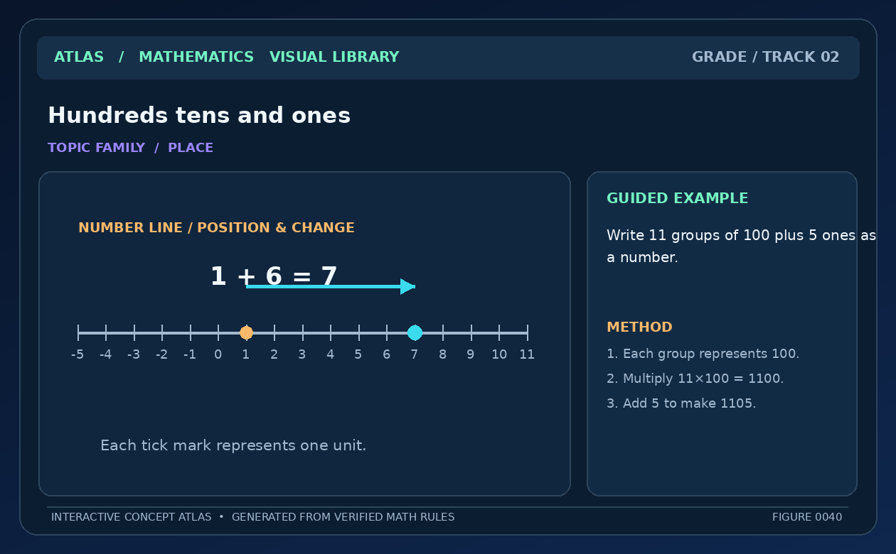
Write 11 groups of 100 plus 5 ones as a number.
- Each group represents 100.
- Multiply 11×100 = 1100.
- Add 5 to make 1105.
Calculate 2×100 + 11.
Hint: Expand the place value before adding.
Show answer and verify
211
Check the units, inputs and intermediate steps. Different solution methods may be valid.
Place value charts to 1000
Place value charts to 1000: Group digits according to powers of ten; moving one place left multiplies value by 10. An expanded number is the sum of its place-value contributions.
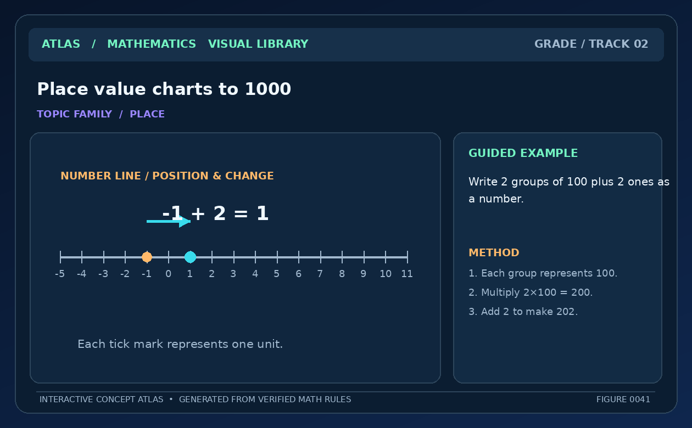
Write 2 groups of 100 plus 2 ones as a number.
- Each group represents 100.
- Multiply 2×100 = 200.
- Add 2 to make 202.
Calculate 4×100 + 2.
Hint: Expand the place value before adding.
Show answer and verify
402
Check the units, inputs and intermediate steps. Different solution methods may be valid.
Expanded form with three digits
Expanded form with three digits: Group digits according to powers of ten; moving one place left multiplies value by 10. An expanded number is the sum of its place-value contributions.
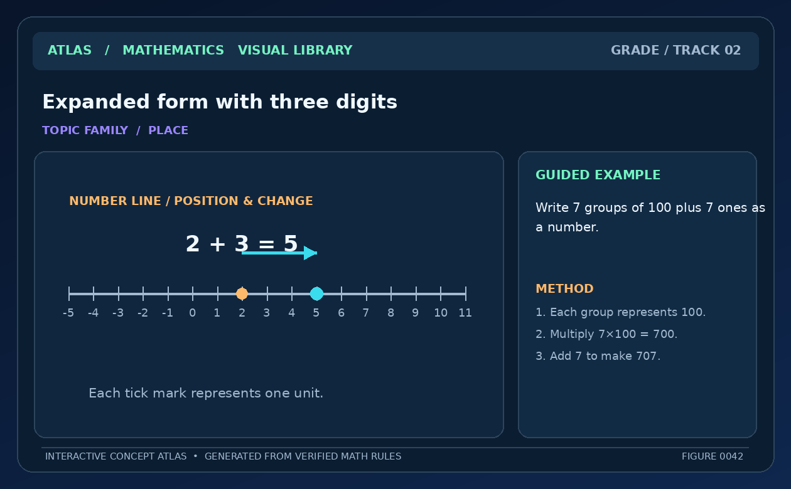
Write 7 groups of 100 plus 7 ones as a number.
- Each group represents 100.
- Multiply 7×100 = 700.
- Add 7 to make 707.
Calculate 6×100 + 7.
Hint: Expand the place value before adding.
Show answer and verify
607
Check the units, inputs and intermediate steps. Different solution methods may be valid.
Compare three-digit numbers
Compare three-digit numbers: Group digits according to powers of ten; moving one place left multiplies value by 10. An expanded number is the sum of its place-value contributions.
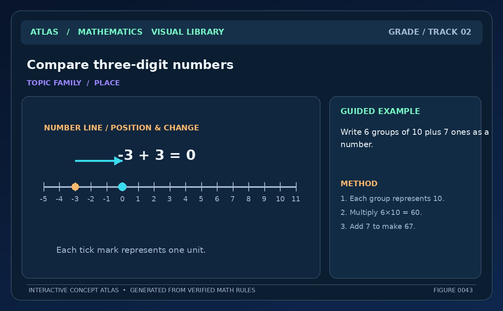
Write 6 groups of 10 plus 7 ones as a number.
- Each group represents 10.
- Multiply 6×10 = 60.
- Add 7 to make 67.
Calculate 3×10 + 6.
Hint: Expand the place value before adding.
Show answer and verify
36
Check the units, inputs and intermediate steps. Different solution methods may be valid.
Rounding to nearest ten
Rounding to nearest ten: Group digits according to powers of ten; moving one place left multiplies value by 10. An expanded number is the sum of its place-value contributions.
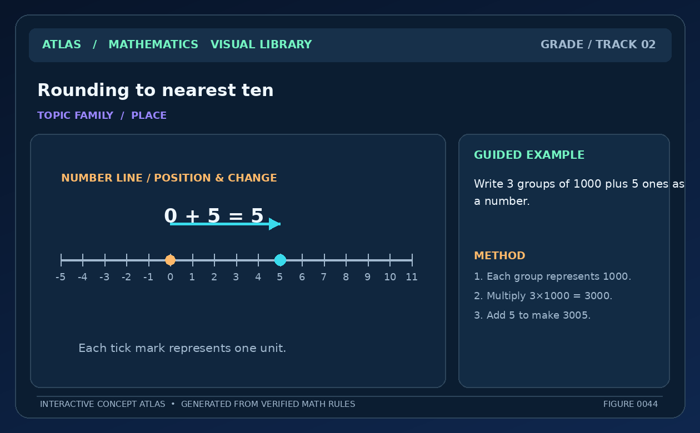
Write 3 groups of 1000 plus 5 ones as a number.
- Each group represents 1000.
- Multiply 3×1000 = 3000.
- Add 5 to make 3005.
Calculate 1×1000 + 3.
Hint: Expand the place value before adding.
Show answer and verify
1003
Check the units, inputs and intermediate steps. Different solution methods may be valid.
Rounding to nearest hundred
Rounding to nearest hundred: Group digits according to powers of ten; moving one place left multiplies value by 10. An expanded number is the sum of its place-value contributions.
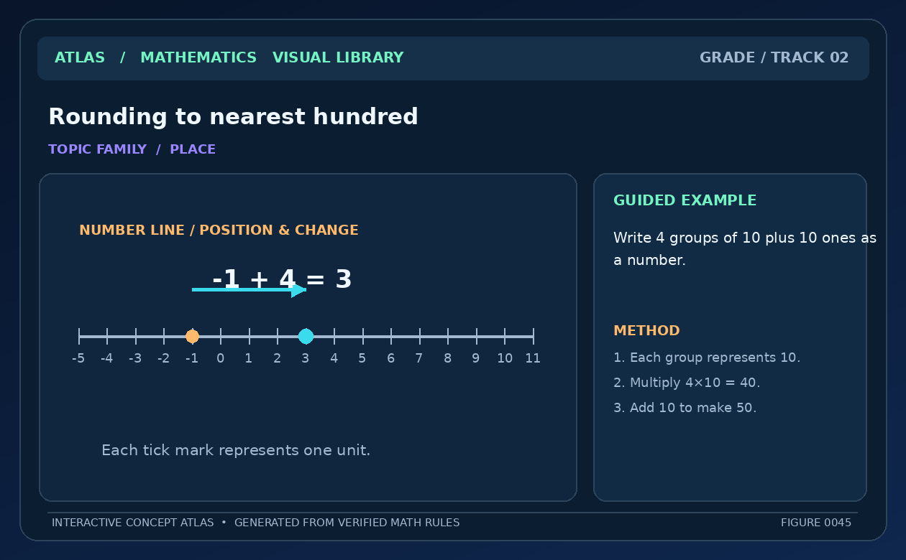
Write 4 groups of 10 plus 10 ones as a number.
- Each group represents 10.
- Multiply 4×10 = 40.
- Add 10 to make 50.
Calculate 6×10 + 4.
Hint: Expand the place value before adding.
Show answer and verify
64
Check the units, inputs and intermediate steps. Different solution methods may be valid.
Regrouping with base-ten blocks
Regrouping with base-ten blocks: Group digits according to powers of ten; moving one place left multiplies value by 10. An expanded number is the sum of its place-value contributions.
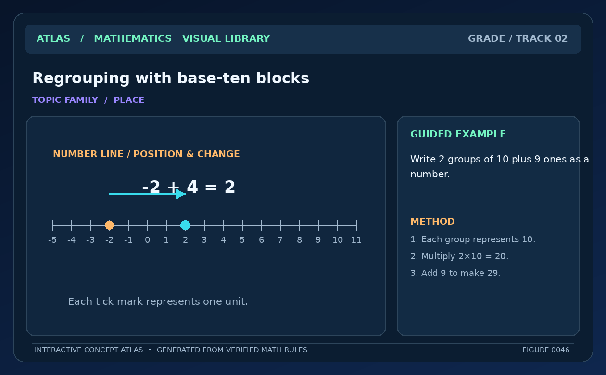
Write 2 groups of 10 plus 9 ones as a number.
- Each group represents 10.
- Multiply 2×10 = 20.
- Add 9 to make 29.
Calculate 7×10 + 2.
Hint: Expand the place value before adding.
Show answer and verify
72
Check the units, inputs and intermediate steps. Different solution methods may be valid.
Mental calculation with tens and hundreds
Mental calculation with tens and hundreds: Group digits according to powers of ten; moving one place left multiplies value by 10. An expanded number is the sum of its place-value contributions.
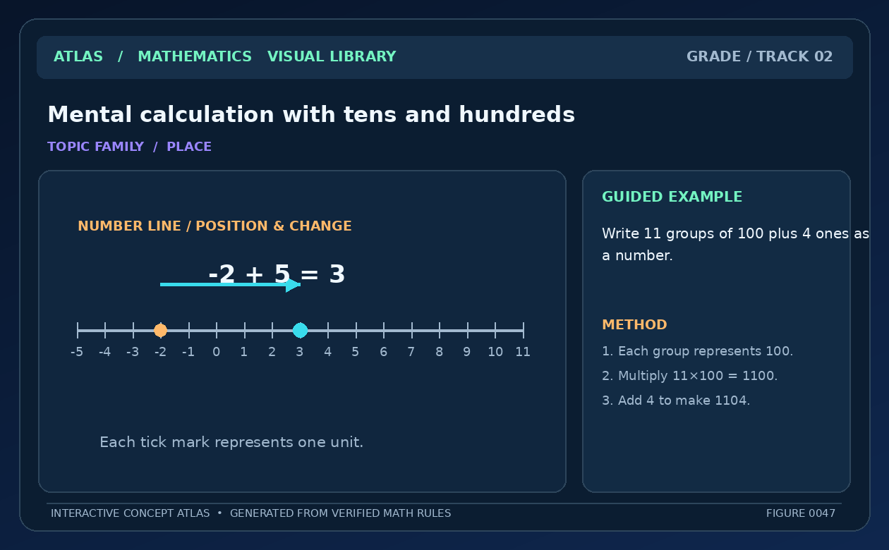
Write 11 groups of 100 plus 4 ones as a number.
- Each group represents 100.
- Multiply 11×100 = 1100.
- Add 4 to make 1104.
Calculate 5×100 + 11.
Hint: Expand the place value before adding.
Show answer and verify
511
Check the units, inputs and intermediate steps. Different solution methods may be valid.
Skip counting by 25
Skip counting by 25: Group digits according to powers of ten; moving one place left multiplies value by 10. An expanded number is the sum of its place-value contributions.
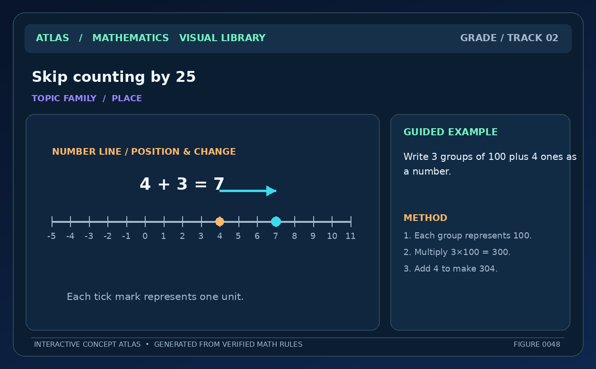
Write 3 groups of 100 plus 4 ones as a number.
- Each group represents 100.
- Multiply 3×100 = 300.
- Add 4 to make 304.
Calculate 3×100 + 3.
Hint: Expand the place value before adding.
Show answer and verify
303
Check the units, inputs and intermediate steps. Different solution methods may be valid.
Three-digit addition without regrouping
Three-digit addition without regrouping: Combine parts, using place value or number bonds to simplify the sum. Addition preserves a total when terms are rearranged.
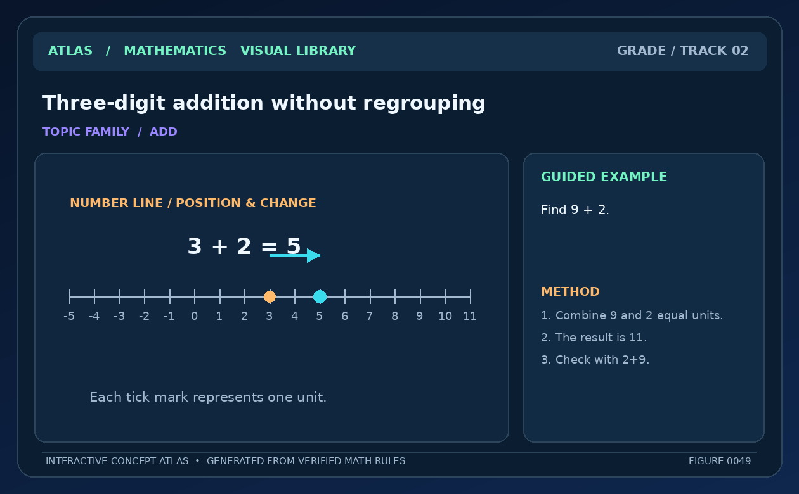
Find 9 + 2.
- Combine 9 and 2 equal units.
- The result is 11.
- Check with 2+9.
11 + 4 = ?
Hint: Make a ten or add the tens and ones separately.
Show answer and verify
15
Check the units, inputs and intermediate steps. Different solution methods may be valid.
Three-digit addition with regrouping
Three-digit addition with regrouping: Combine parts, using place value or number bonds to simplify the sum. Addition preserves a total when terms are rearranged.
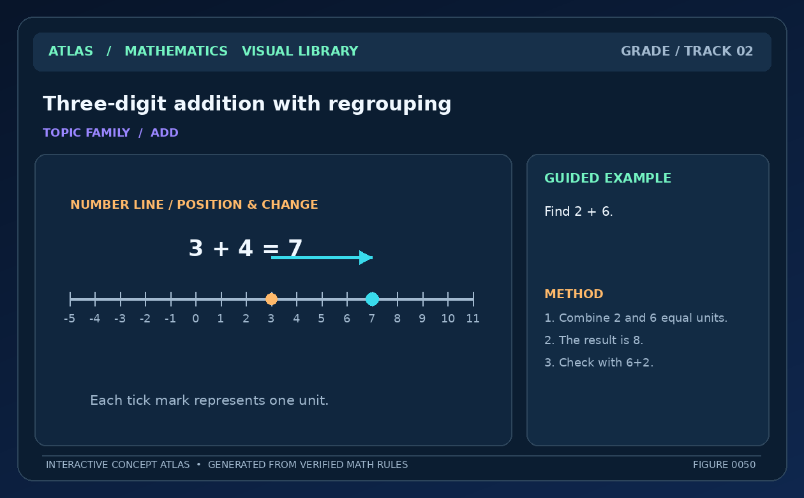
Find 2 + 6.
- Combine 2 and 6 equal units.
- The result is 8.
- Check with 6+2.
8 + 12 = ?
Hint: Make a ten or add the tens and ones separately.
Show answer and verify
20
Check the units, inputs and intermediate steps. Different solution methods may be valid.
Column addition algorithms
Column addition algorithms: Combine parts, using place value or number bonds to simplify the sum. Addition preserves a total when terms are rearranged.
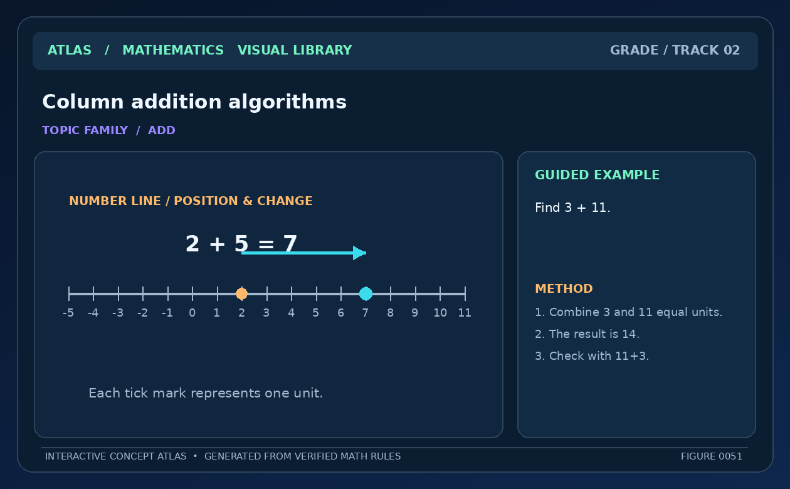
Find 3 + 11.
- Combine 3 and 11 equal units.
- The result is 14.
- Check with 11+3.
5 + 13 = ?
Hint: Make a ten or add the tens and ones separately.
Show answer and verify
18
Check the units, inputs and intermediate steps. Different solution methods may be valid.
Addition word problems with unknowns
Addition word problems with unknowns: Combine parts, using place value or number bonds to simplify the sum. Addition preserves a total when terms are rearranged.
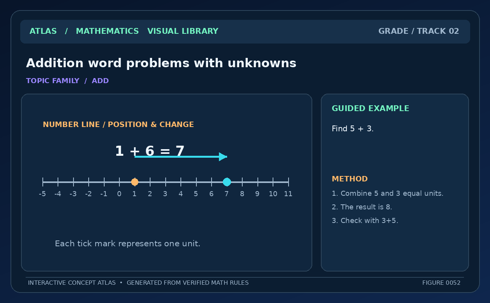
Find 5 + 3.
- Combine 5 and 3 equal units.
- The result is 8.
- Check with 3+5.
8 + 6 = ?
Hint: Make a ten or add the tens and ones separately.
Show answer and verify
14
Check the units, inputs and intermediate steps. Different solution methods may be valid.
Properties of addition
Properties of addition: Combine parts, using place value or number bonds to simplify the sum. Addition preserves a total when terms are rearranged.
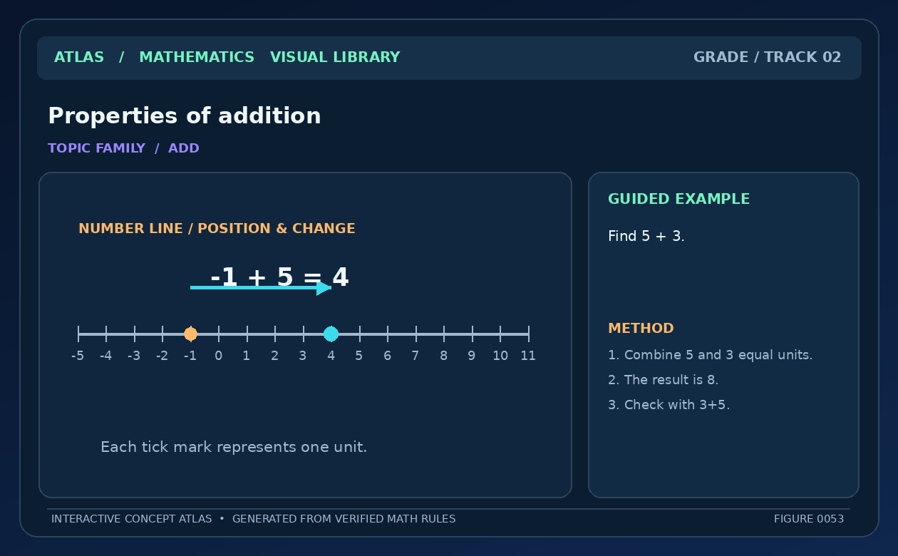
Find 5 + 3.
- Combine 5 and 3 equal units.
- The result is 8.
- Check with 3+5.
10 + 8 = ?
Hint: Make a ten or add the tens and ones separately.
Show answer and verify
18
Check the units, inputs and intermediate steps. Different solution methods may be valid.
Estimate sums before calculating
Estimate sums before calculating: Combine parts, using place value or number bonds to simplify the sum. Addition preserves a total when terms are rearranged.
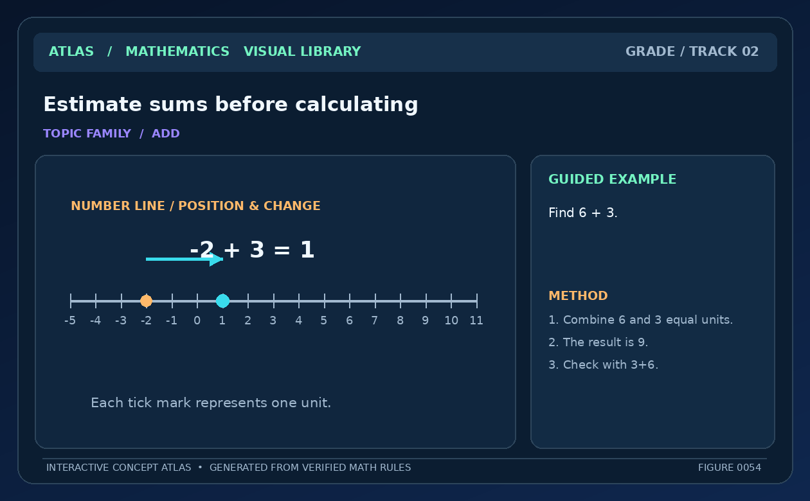
Find 6 + 3.
- Combine 6 and 3 equal units.
- The result is 9.
- Check with 3+6.
13 + 10 = ?
Hint: Make a ten or add the tens and ones separately.
Show answer and verify
23
Check the units, inputs and intermediate steps. Different solution methods may be valid.
Three-digit subtraction without borrowing
Three-digit subtraction without borrowing: Represent the difference between a starting amount and an amount removed. Subtraction can be checked by adding the difference to the subtracted amount.
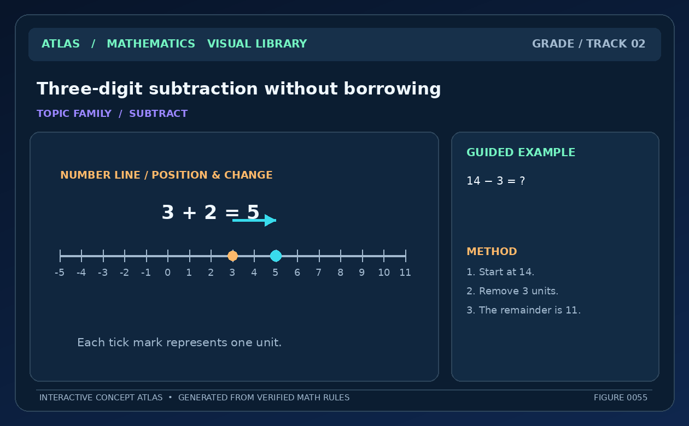
14 − 3 = ?
- Start at 14.
- Remove 3 units.
- The remainder is 11.
21 − 3 = ?
Hint: Subtract from the original amount.
Show answer and verify
18
Check the units, inputs and intermediate steps. Different solution methods may be valid.
Three-digit subtraction with borrowing
Three-digit subtraction with borrowing: Represent the difference between a starting amount and an amount removed. Subtraction can be checked by adding the difference to the subtracted amount.
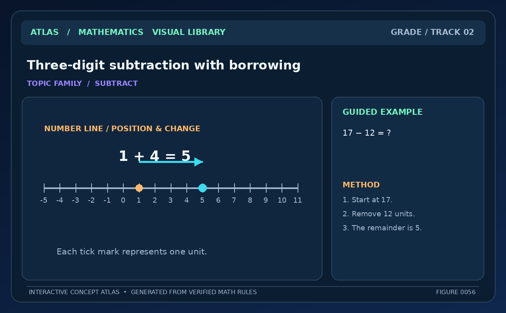
17 − 12 = ?
- Start at 17.
- Remove 12 units.
- The remainder is 5.
20 − 12 = ?
Hint: Subtract from the original amount.
Show answer and verify
8
Check the units, inputs and intermediate steps. Different solution methods may be valid.
Subtraction using compensation
Subtraction using compensation: Represent the difference between a starting amount and an amount removed. Subtraction can be checked by adding the difference to the subtracted amount.
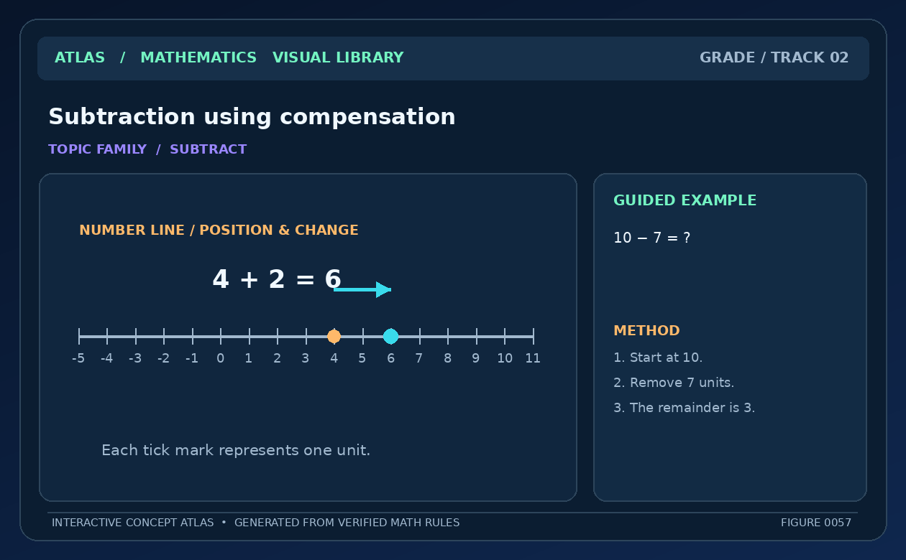
10 − 7 = ?
- Start at 10.
- Remove 7 units.
- The remainder is 3.
16 − 7 = ?
Hint: Subtract from the original amount.
Show answer and verify
9
Check the units, inputs and intermediate steps. Different solution methods may be valid.
Subtracting across zeros
Subtracting across zeros: Represent the difference between a starting amount and an amount removed. Subtraction can be checked by adding the difference to the subtracted amount.
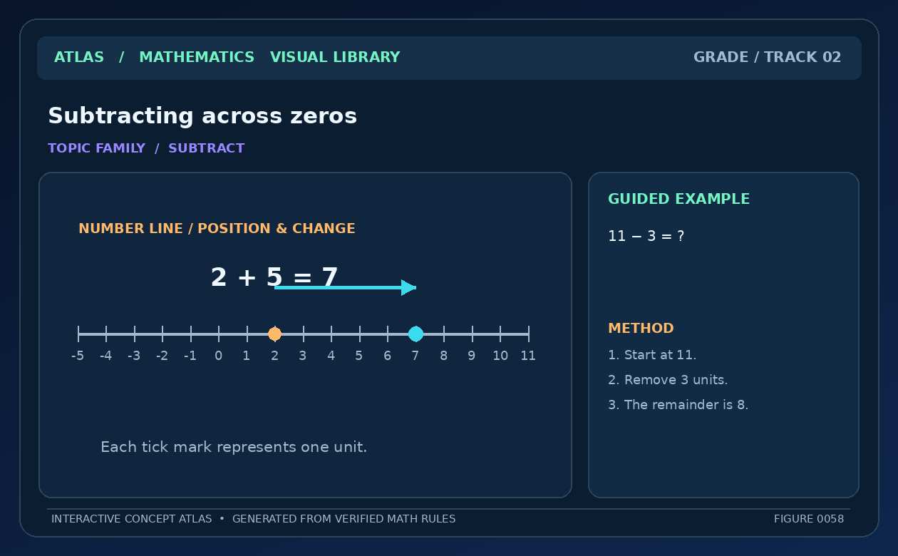
11 − 3 = ?
- Start at 11.
- Remove 3 units.
- The remainder is 8.
14 − 3 = ?
Hint: Subtract from the original amount.
Show answer and verify
11
Check the units, inputs and intermediate steps. Different solution methods may be valid.
Multistep subtraction word problems
Multistep subtraction word problems: Represent the difference between a starting amount and an amount removed. Subtraction can be checked by adding the difference to the subtracted amount.
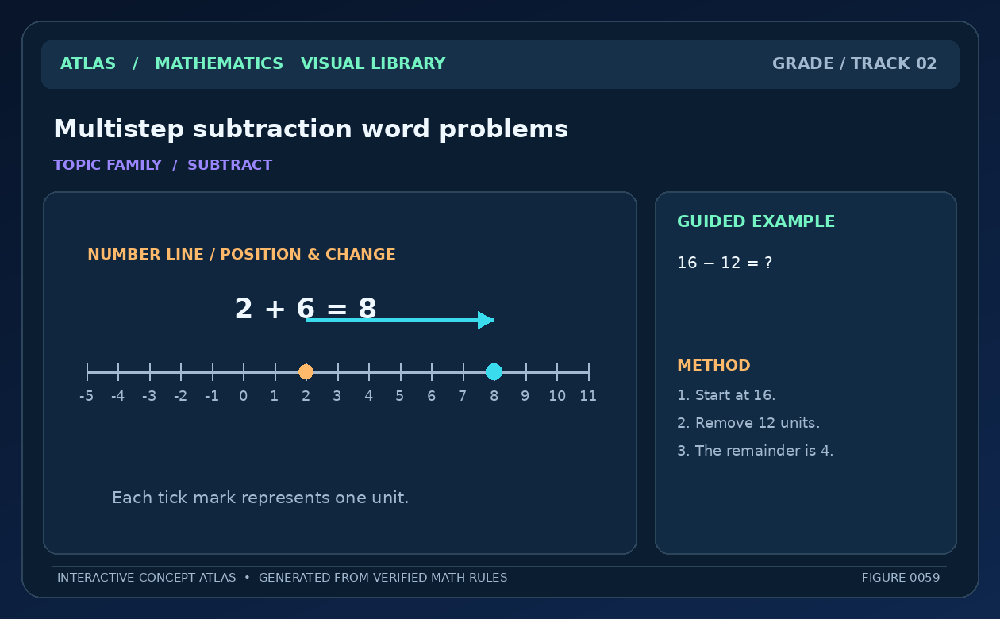
16 − 12 = ?
- Start at 16.
- Remove 12 units.
- The remainder is 4.
17 − 12 = ?
Hint: Subtract from the original amount.
Show answer and verify
5
Check the units, inputs and intermediate steps. Different solution methods may be valid.
Checking subtraction with addition
Checking subtraction with addition: Represent the difference between a starting amount and an amount removed. Subtraction can be checked by adding the difference to the subtracted amount.
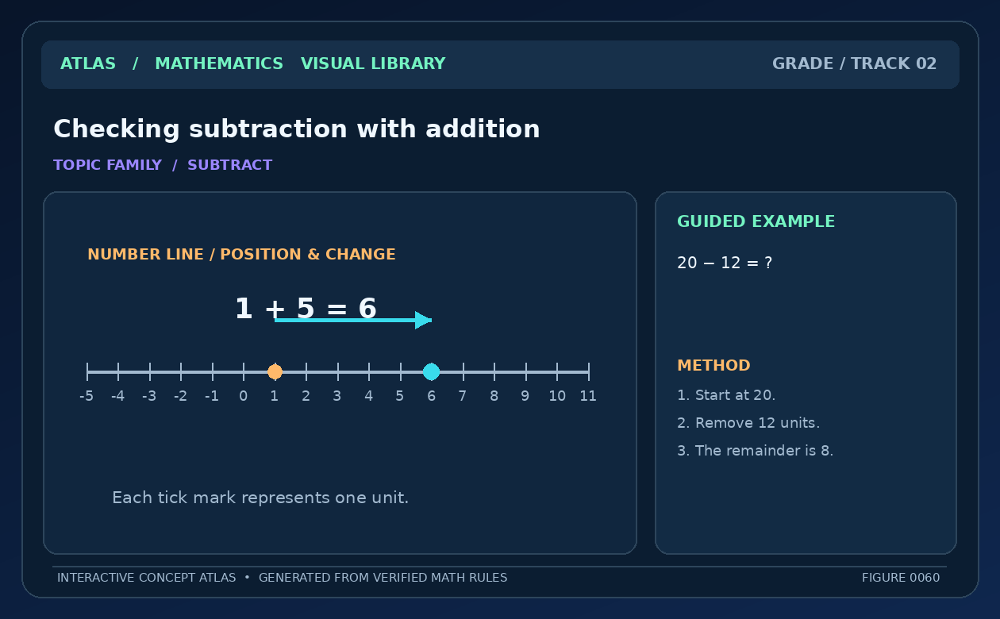
20 − 12 = ?
- Start at 20.
- Remove 12 units.
- The remainder is 8.
23 − 12 = ?
Hint: Subtract from the original amount.
Show answer and verify
11
Check the units, inputs and intermediate steps. Different solution methods may be valid.
Arrays and repeated addition
Arrays and repeated addition: Multiplication counts equal groups and can be visualized as rectangular arrays. Use the distributive property to break a product into smaller products.
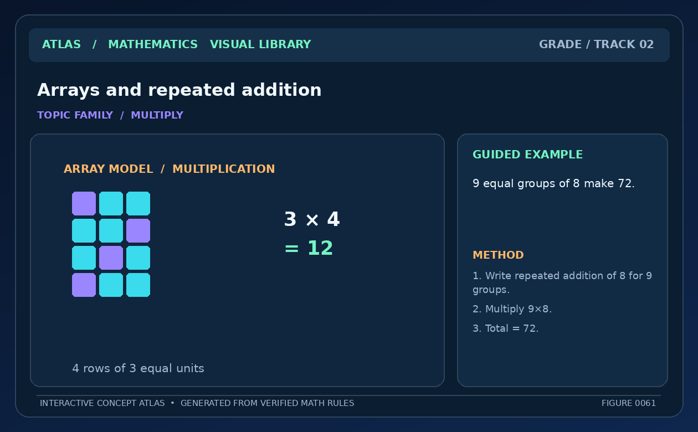
9 equal groups of 8 make 72.
- Write repeated addition of 8 for 9 groups.
- Multiply 9×8.
- Total = 72.
What is 13×8?
Hint: Use an area model or multiply each part.
Show answer and verify
104
Check the units, inputs and intermediate steps. Different solution methods may be valid.
Equal groups
Equal groups: Multiplication counts equal groups and can be visualized as rectangular arrays. Use the distributive property to break a product into smaller products.
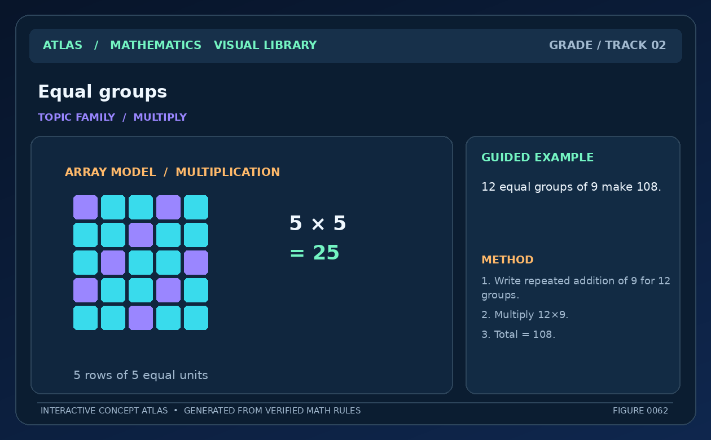
12 equal groups of 9 make 108.
- Write repeated addition of 9 for 12 groups.
- Multiply 12×9.
- Total = 108.
What is 13×9?
Hint: Use an area model or multiply each part.
Show answer and verify
117
Check the units, inputs and intermediate steps. Different solution methods may be valid.
Counting multiplication patterns
Counting multiplication patterns: Multiplication counts equal groups and can be visualized as rectangular arrays. Use the distributive property to break a product into smaller products.
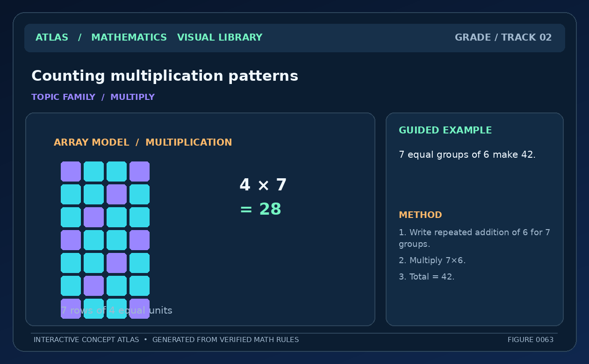
7 equal groups of 6 make 42.
- Write repeated addition of 6 for 7 groups.
- Multiply 7×6.
- Total = 42.
What is 9×6?
Hint: Use an area model or multiply each part.
Show answer and verify
54
Check the units, inputs and intermediate steps. Different solution methods may be valid.
Multiplication as rectangular area
Multiplication as rectangular area: Multiplication counts equal groups and can be visualized as rectangular arrays. Use the distributive property to break a product into smaller products.
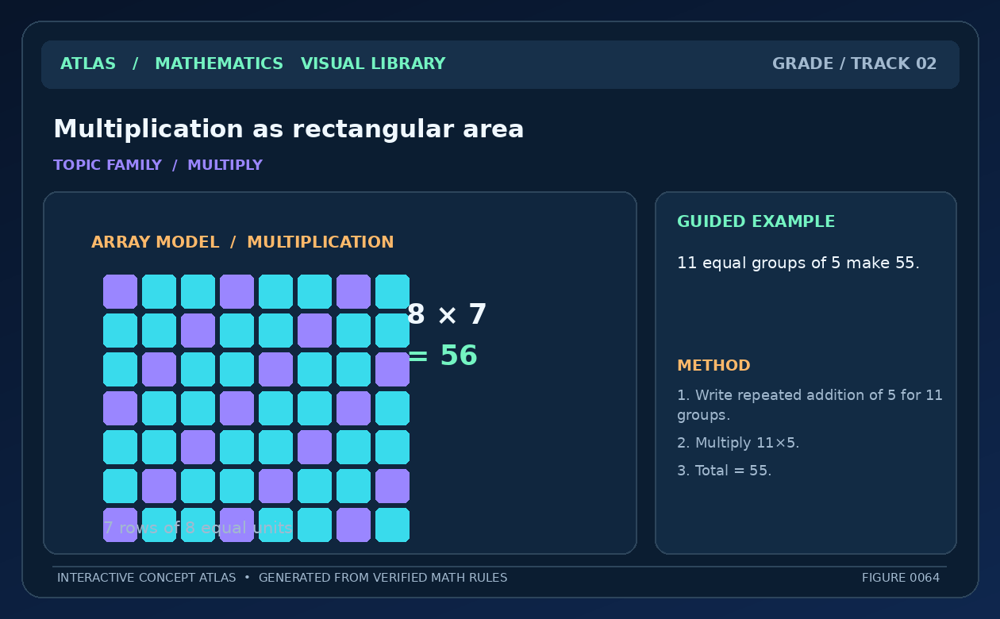
11 equal groups of 5 make 55.
- Write repeated addition of 5 for 11 groups.
- Multiply 11×5.
- Total = 55.
What is 13×5?
Hint: Use an area model or multiply each part.
Show answer and verify
65
Check the units, inputs and intermediate steps. Different solution methods may be valid.
Money amounts and change
Money amounts and change: Line up currency units and calculate totals or change from known prices. Always label answers in dollars or cents and round monetary results to cents.
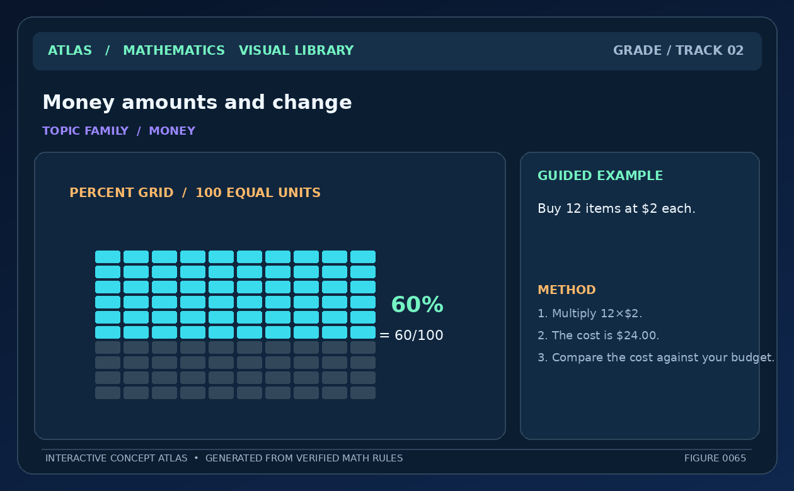
Buy 12 items at $2 each.
- Multiply 12×$2.
- The cost is $24.00.
- Compare the cost against your budget.
What is the dollar cost of 7 items at $3 each?
Hint: Multiply item count by price per item.
Show answer and verify
21
Check the units, inputs and intermediate steps. Different solution methods may be valid.
Comparing shopping prices
Comparing shopping prices: Line up currency units and calculate totals or change from known prices. Always label answers in dollars or cents and round monetary results to cents.
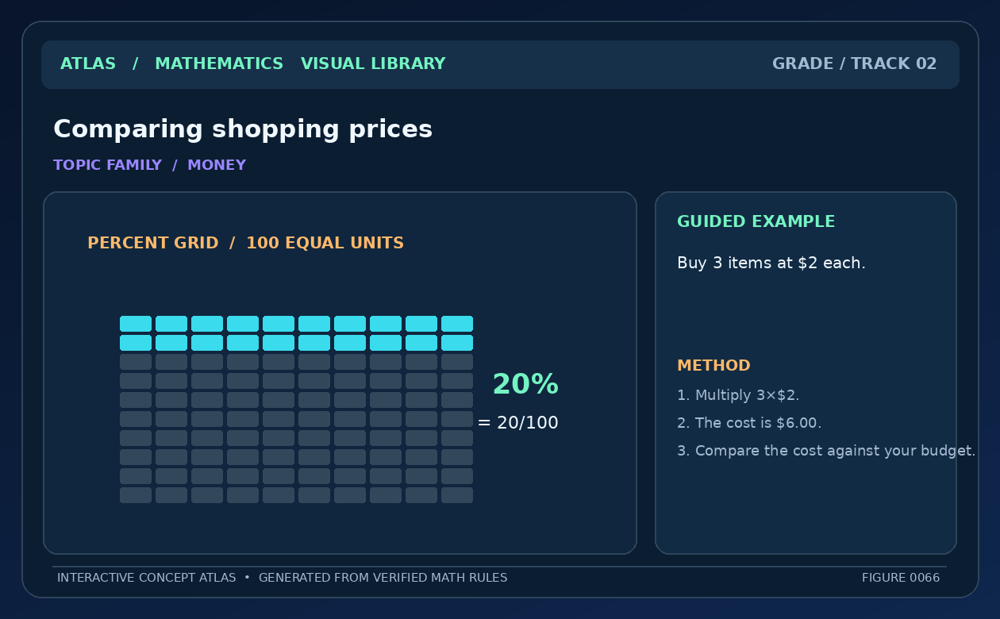
Buy 3 items at $2 each.
- Multiply 3×$2.
- The cost is $6.00.
- Compare the cost against your budget.
What is the dollar cost of 10 items at $3 each?
Hint: Multiply item count by price per item.
Show answer and verify
30
Check the units, inputs and intermediate steps. Different solution methods may be valid.
Representing dollars and cents
Representing dollars and cents: Line up currency units and calculate totals or change from known prices. Always label answers in dollars or cents and round monetary results to cents.
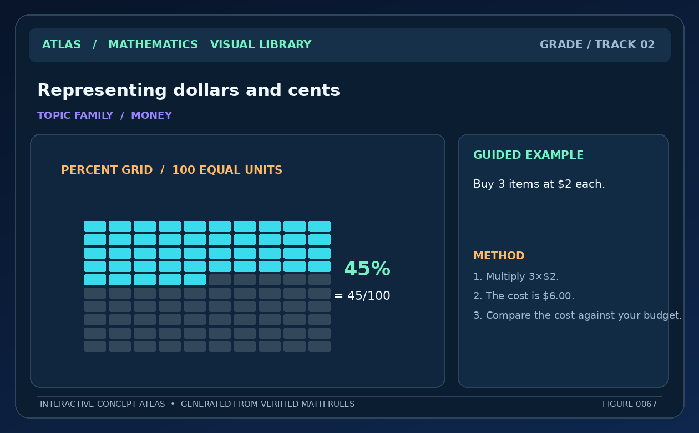
Buy 3 items at $2 each.
- Multiply 3×$2.
- The cost is $6.00.
- Compare the cost against your budget.
What is the dollar cost of 6 items at $3 each?
Hint: Multiply item count by price per item.
Show answer and verify
18
Check the units, inputs and intermediate steps. Different solution methods may be valid.
Halves thirds and fourths
Halves thirds and fourths: Use the numerator for selected parts and denominator for equal pieces in the whole. Equivalent fractions are obtained by multiplying numerator and denominator by the same nonzero factor.
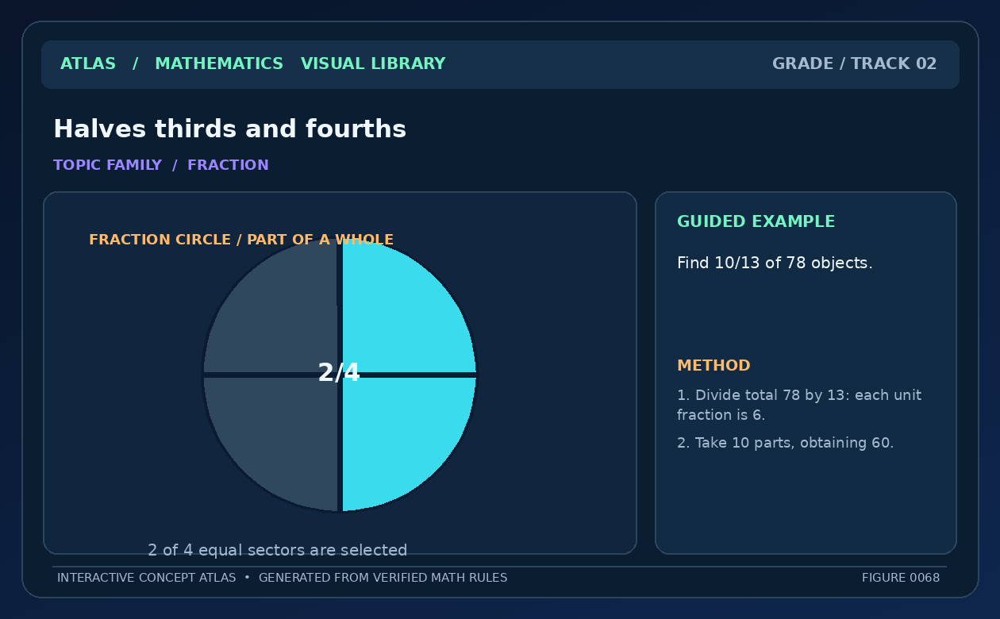
Find 10/13 of 78 objects.
- Divide total 78 by 13: each unit fraction is 6.
- Take 10 parts, obtaining 60.
Find 3/13 of 78 objects.
Hint: First find the value of one equal part.
Show answer and verify
18
Check the units, inputs and intermediate steps. Different solution methods may be valid.
Equal-size fractions on diagrams
Equal-size fractions on diagrams: Use the numerator for selected parts and denominator for equal pieces in the whole. Equivalent fractions are obtained by multiplying numerator and denominator by the same nonzero factor.
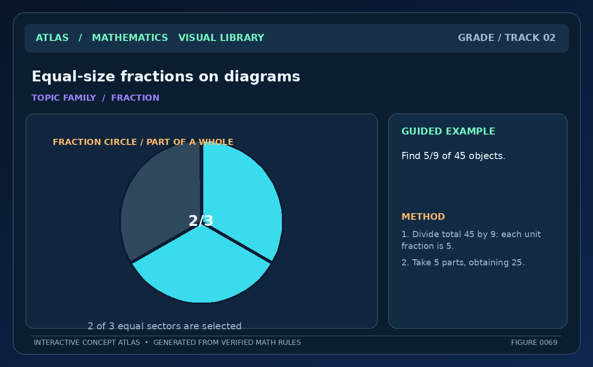
Find 5/9 of 45 objects.
- Divide total 45 by 9: each unit fraction is 5.
- Take 5 parts, obtaining 25.
Find 4/9 of 45 objects.
Hint: First find the value of one equal part.
Show answer and verify
20
Check the units, inputs and intermediate steps. Different solution methods may be valid.
Fraction of a set
Fraction of a set: Use the numerator for selected parts and denominator for equal pieces in the whole. Equivalent fractions are obtained by multiplying numerator and denominator by the same nonzero factor.
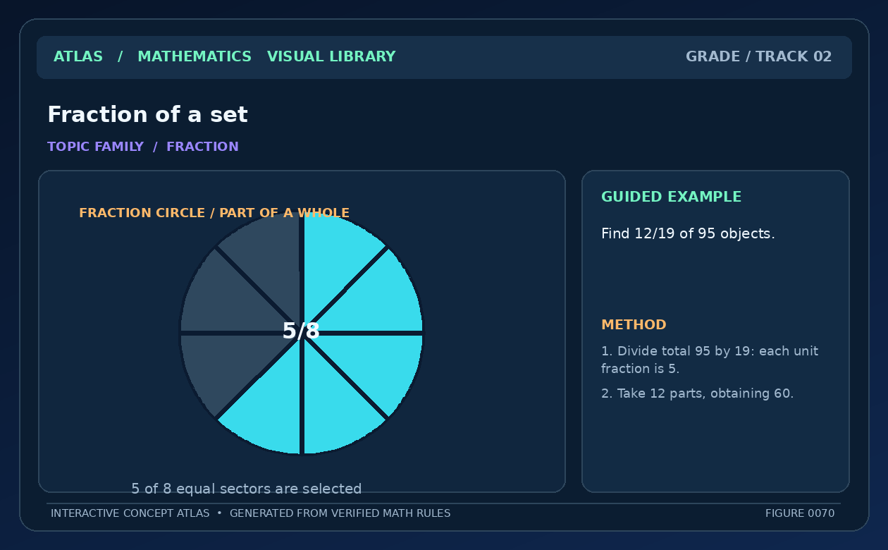
Find 12/19 of 95 objects.
- Divide total 95 by 19: each unit fraction is 5.
- Take 12 parts, obtaining 60.
Find 7/19 of 95 objects.
Hint: First find the value of one equal part.
Show answer and verify
35
Check the units, inputs and intermediate steps. Different solution methods may be valid.
Estimating lengths
Estimating lengths: Convert by applying a consistent unit factor; write units in every step. An equivalent measurement has a different number but represents the same magnitude.
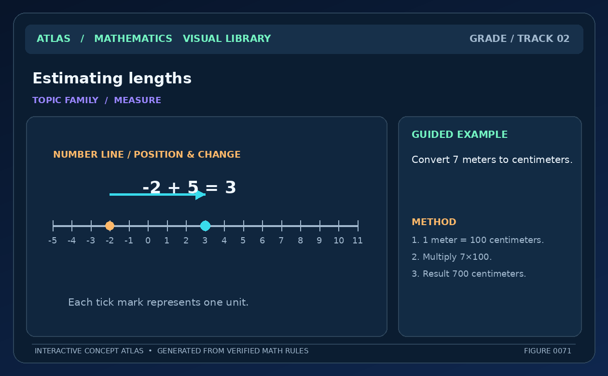
Convert 7 meters to centimeters.
- 1 meter = 100 centimeters.
- Multiply 7×100.
- Result 700 centimeters.
10 meters equals how many centimeters?
Hint: Multiply meters by 100.
Show answer and verify
1000
Check the units, inputs and intermediate steps. Different solution methods may be valid.
Metric length comparisons
Metric length comparisons: Convert by applying a consistent unit factor; write units in every step. An equivalent measurement has a different number but represents the same magnitude.
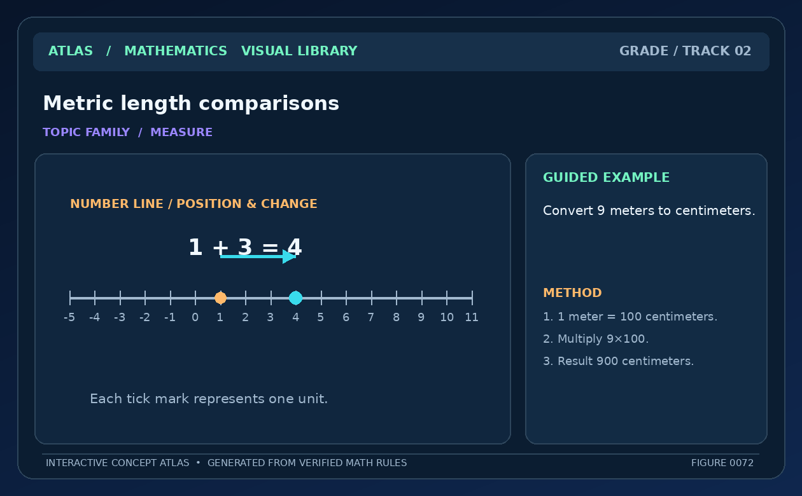
Convert 9 meters to centimeters.
- 1 meter = 100 centimeters.
- Multiply 9×100.
- Result 900 centimeters.
7 meters equals how many centimeters?
Hint: Multiply meters by 100.
Show answer and verify
700
Check the units, inputs and intermediate steps. Different solution methods may be valid.
Capacity and mass
Capacity and mass: Convert by applying a consistent unit factor; write units in every step. An equivalent measurement has a different number but represents the same magnitude.
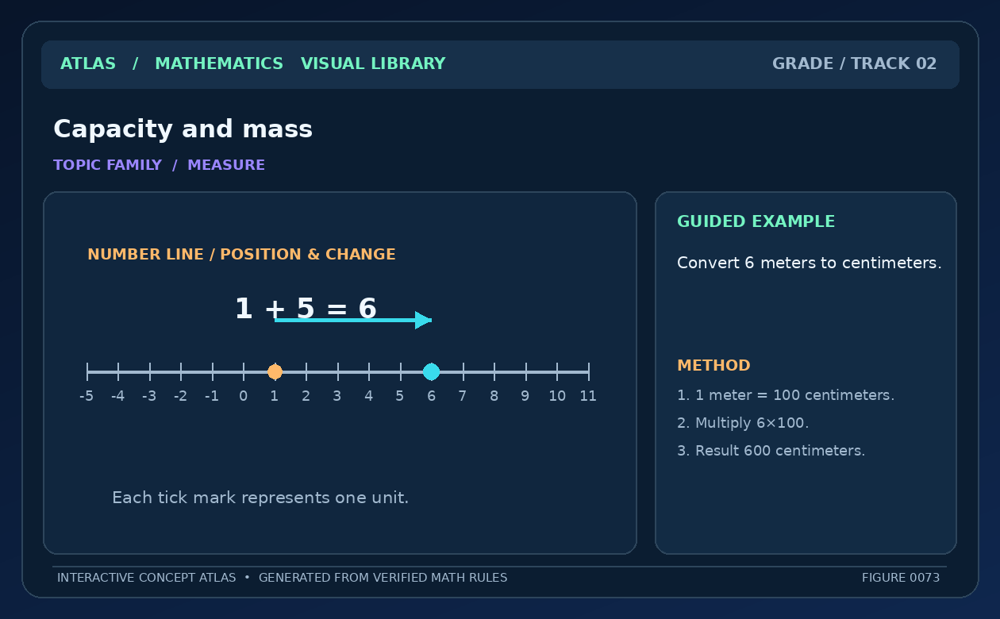
Convert 6 meters to centimeters.
- 1 meter = 100 centimeters.
- Multiply 6×100.
- Result 600 centimeters.
3 meters equals how many centimeters?
Hint: Multiply meters by 100.
Show answer and verify
300
Check the units, inputs and intermediate steps. Different solution methods may be valid.
Using a ruler
Using a ruler: Convert by applying a consistent unit factor; write units in every step. An equivalent measurement has a different number but represents the same magnitude.
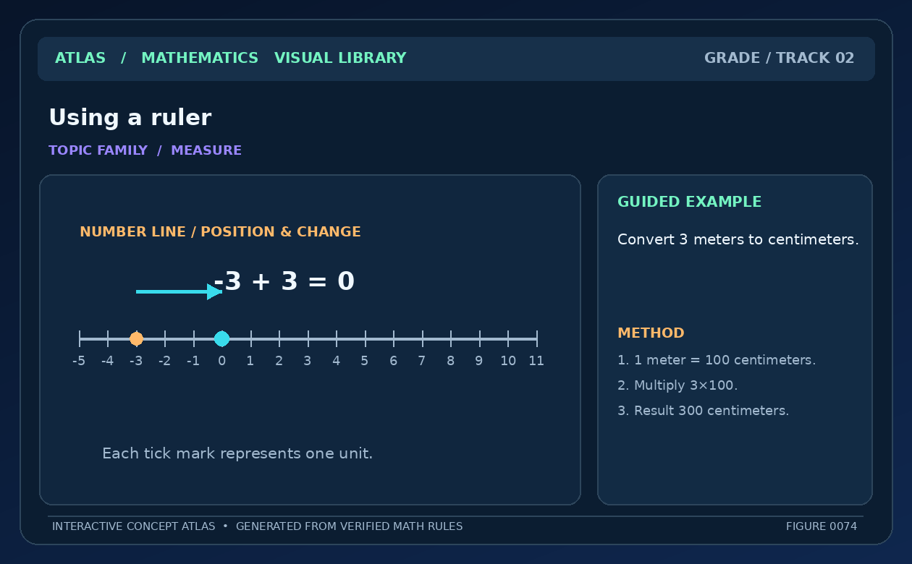
Convert 3 meters to centimeters.
- 1 meter = 100 centimeters.
- Multiply 3×100.
- Result 300 centimeters.
7 meters equals how many centimeters?
Hint: Multiply meters by 100.
Show answer and verify
700
Check the units, inputs and intermediate steps. Different solution methods may be valid.
Measuring to a nearest unit
Measuring to a nearest unit: Convert by applying a consistent unit factor; write units in every step. An equivalent measurement has a different number but represents the same magnitude.
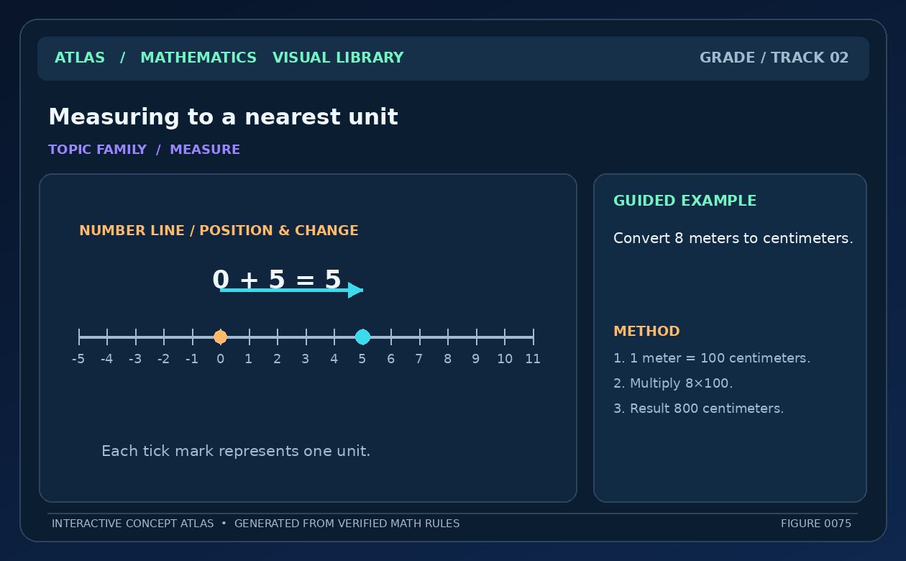
Convert 8 meters to centimeters.
- 1 meter = 100 centimeters.
- Multiply 8×100.
- Result 800 centimeters.
5 meters equals how many centimeters?
Hint: Multiply meters by 100.
Show answer and verify
500
Check the units, inputs and intermediate steps. Different solution methods may be valid.
Reading clocks to five minutes
Reading clocks to five minutes: Convert hours to minutes by multiplying by 60, then add or subtract durations. Using one unit first prevents mismatched time arithmetic.
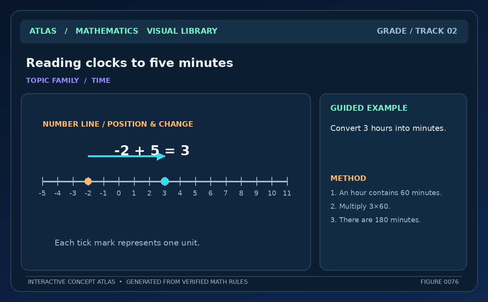
Convert 3 hours into minutes.
- An hour contains 60 minutes.
- Multiply 3×60.
- There are 180 minutes.
How many minutes in 5 hours?
Hint: Multiply the hours by sixty.
Show answer and verify
300
Check the units, inputs and intermediate steps. Different solution methods may be valid.
Minutes hours and days
Minutes hours and days: Convert hours to minutes by multiplying by 60, then add or subtract durations. Using one unit first prevents mismatched time arithmetic.
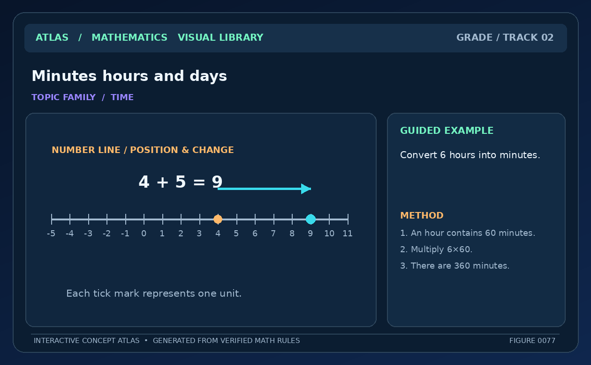
Convert 6 hours into minutes.
- An hour contains 60 minutes.
- Multiply 6×60.
- There are 360 minutes.
How many minutes in 8 hours?
Hint: Multiply the hours by sixty.
Show answer and verify
480
Check the units, inputs and intermediate steps. Different solution methods may be valid.
Elapsed time within an hour
Elapsed time within an hour: Convert hours to minutes by multiplying by 60, then add or subtract durations. Using one unit first prevents mismatched time arithmetic.
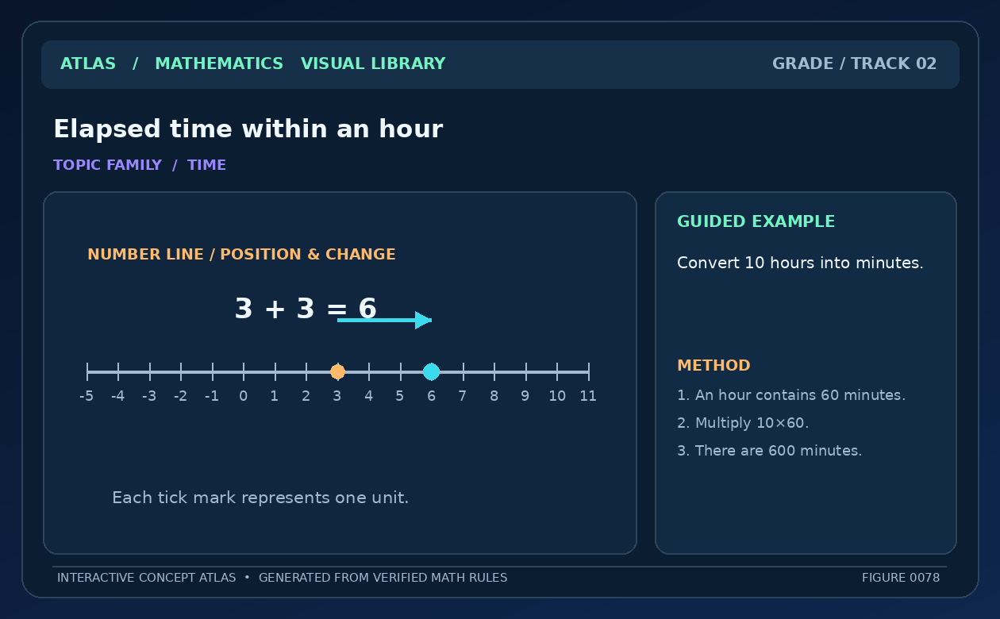
Convert 10 hours into minutes.
- An hour contains 60 minutes.
- Multiply 10×60.
- There are 600 minutes.
How many minutes in 6 hours?
Hint: Multiply the hours by sixty.
Show answer and verify
360
Check the units, inputs and intermediate steps. Different solution methods may be valid.
Quadrilaterals and polygons
Quadrilaterals and polygons: Sketch and label known lengths, angles and shape properties before calculating. A valid geometric argument uses definitions and established properties.
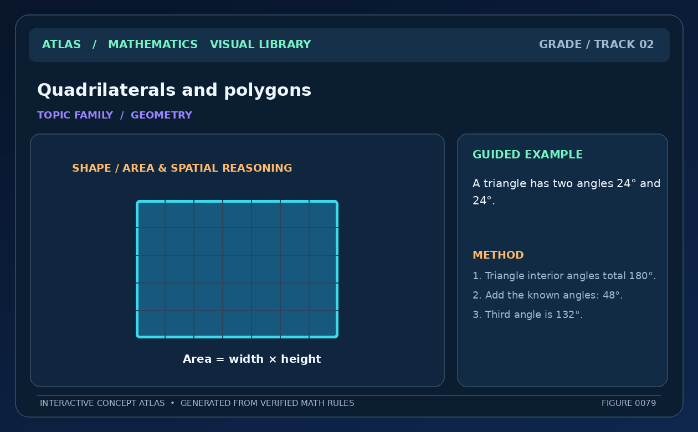
A triangle has two angles 24° and 24°.
- Triangle interior angles total 180°.
- Add the known angles: 48°.
- Third angle is 132°.
A triangle has angles 16° and 18°. Find the third.
Hint: Interior triangle angles sum to 180 degrees.
Show answer and verify
146
Check the units, inputs and intermediate steps. Different solution methods may be valid.
Lines and line segments
Lines and line segments: Sketch and label known lengths, angles and shape properties before calculating. A valid geometric argument uses definitions and established properties.
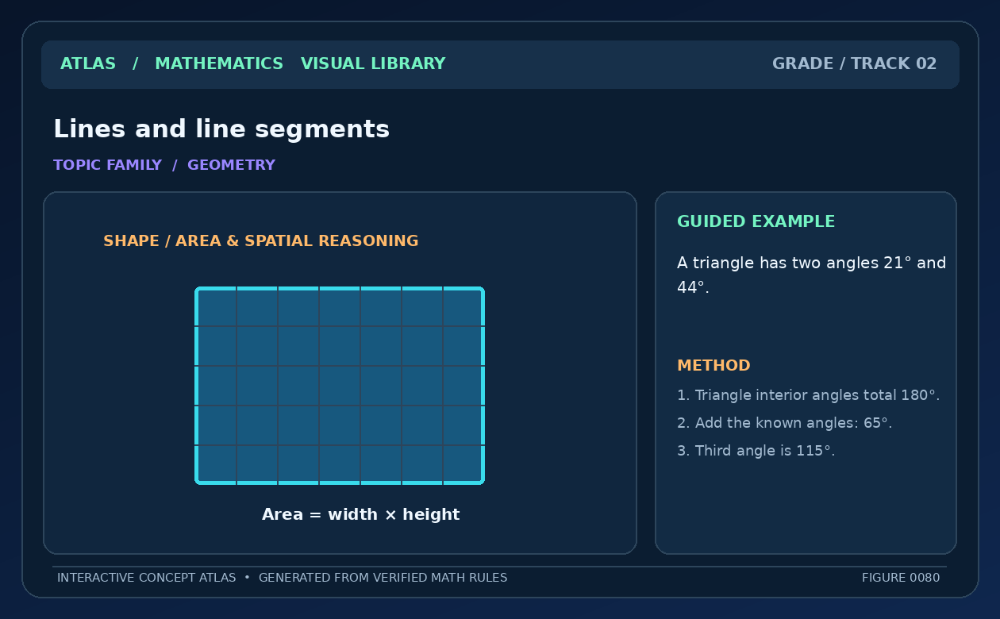
A triangle has two angles 21° and 44°.
- Triangle interior angles total 180°.
- Add the known angles: 65°.
- Third angle is 115°.
A triangle has angles 14° and 33°. Find the third.
Hint: Interior triangle angles sum to 180 degrees.
Show answer and verify
133
Check the units, inputs and intermediate steps. Different solution methods may be valid.
Composing shapes
Composing shapes: Sketch and label known lengths, angles and shape properties before calculating. A valid geometric argument uses definitions and established properties.
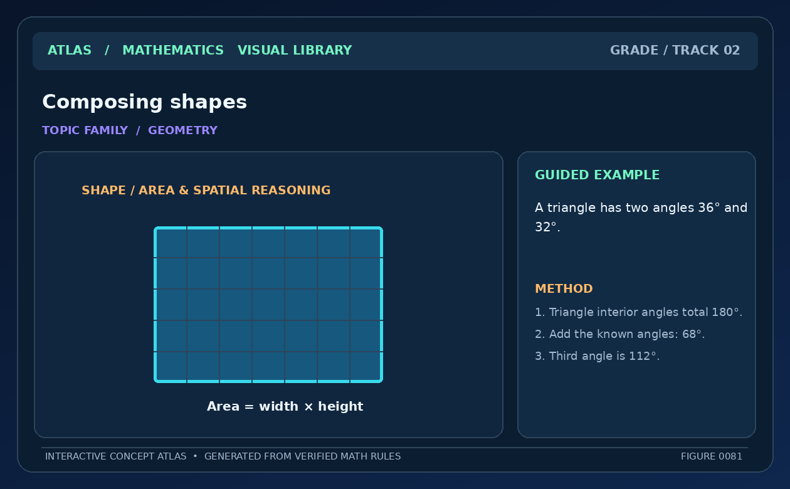
A triangle has two angles 36° and 32°.
- Triangle interior angles total 180°.
- Add the known angles: 68°.
- Third angle is 112°.
A triangle has angles 24° and 24°. Find the third.
Hint: Interior triangle angles sum to 180 degrees.
Show answer and verify
132
Check the units, inputs and intermediate steps. Different solution methods may be valid.